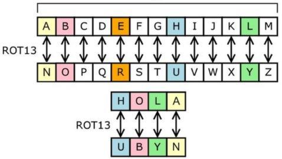
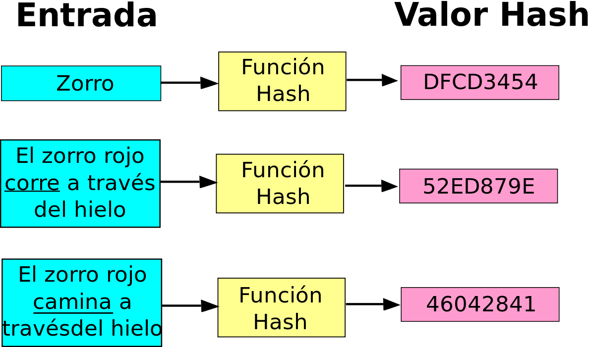
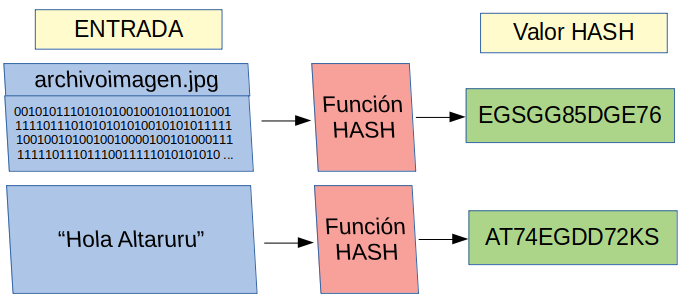
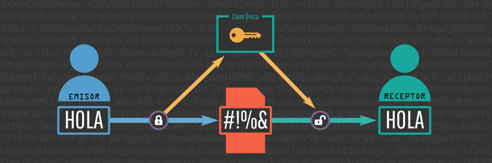
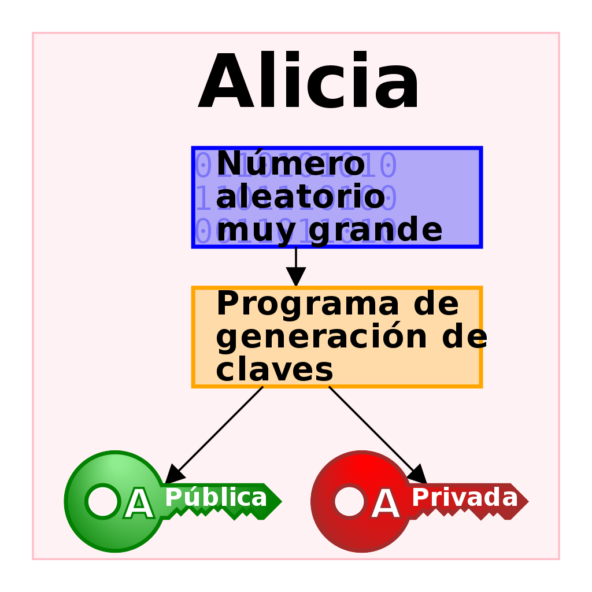
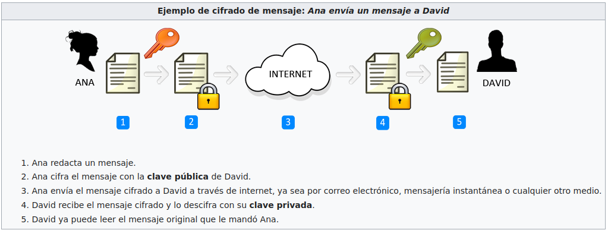
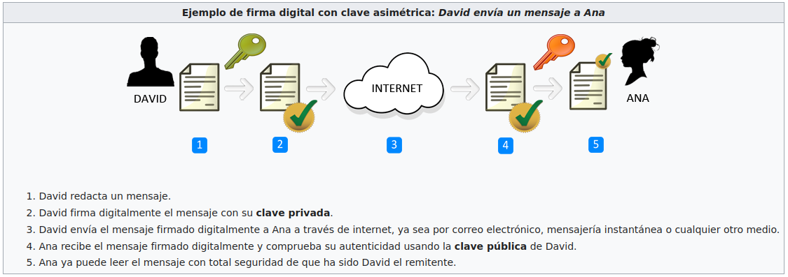

Tema
1. Introducción
Criptografía
La criptografía es el desarrollo de un conjunto de técnicas que permiten alterar y modificar mensajes o archivos con el objetivo de que no puedan ser leídos por todos aquellos usuarios que no estén autorizados a hacerlo. Hoy en día, en pleno auge de las comunicaciones digitales, funciona como la base para cualquier proceso de seguridad informática.
Esta disciplina nació en la Antigua Grecia con el objetivo de evitar que se difundan secretos militares. Los mensajes se encriptaban con métodos sencillos como, por ejemplo, alternando las letras del abecedario. Con el correr de los siglos esas técnicas se fueron complejizando considerablemente y actualmente atraviesan gran parte de nuestra vida cotidiana.
Entre el Antiguo Egipto e Internet, los criptogramas (los mensajes cifrados) han protagonizado buena parte de los grandes episodios históricos y un sinfín de anécdotas. Existen mensajes cifrados entre los artículos del Kamasutra, se usaron por gobernantes y militares ya en los primeros estados como Egipto, Babilonia, Roma... Abundan en los textos diplomáticos de toda época, indispensables para las órdenes militares y los ejércitos modernos en tiempos de guerra y, por supuesto, esenciales en la actividad de los espías. Hoy en día, con las nuevas tecnologías el uso de la criptografía se ha extendido más allá de su tradicional esfera estatal o política, y es vital también para la actividad diaria de las empresas y ciudadanos particulares.
Algunos ejemplos de la evolución a lo largo de la historia del uso de elementos criptográficos són los siguientes. Los espartanos utilizaron, hacia el 400 a.C., la Escitala, que puede considerarse el primer sistema de criptografía por transposición, es decir, que se caracteriza por ocultar el significado real de un texto alterando el orden de los signos que lo conforman. Los militares de la ciudad-estado griega escribían sus mensajes sobre una tela que envolvía una vara. El mensaje sólo podía leerse cuando se enrollaba la tela sobre un bastón del mismo grosor, que poseía el destinatario lícito del mensaje (¿el origen del "bastón de mando"?).El método de la escitala era extremadamente sencillo, como también lo era el que utilizó Julio César, basado en la sustitución de cada letra por la situada tres puestos después en el alfabeto latino. A este cifrado por sustitución sencilla se le conoce como cifrado César.


La escitala
Mira este sencillo video sobre el funcionamiento de la escitala.
Criptografía y matemática
Una buena introducción a la criptografia y las matemáticas.
A medida que la tecnología evolucionó, los elementos criptográficos se volvieron más complejos, encontrando ejemplos cómo la máquina Enigma en la II Guerra Mundial.
2. Funciones HASH
HASH
Una función criptográfica hash- usualmente conocida como “hash”- es un algoritmo matemático que transforma cualquier bloque arbitrario de datos en una nueva serie de caracteres con una longitud fija. Independientemente de la longitud de los datos de entrada, el valor hash de salida tendrá siempre la misma longitud.

A modo de ejemplo introductorio, vemos en la siguiente figura que las funciones HASH se pueden aplicar tanto a texto cómo a ficheros de datos.

Artículo
Lee este artículo en el que se explica el funcionamiento de las funciones HASH.
3. Cifrado simétrico
Uso de claves
Solo utiliza una clave para cifrar y descifrar. Ésta debe ser previamente conocida por todas las partes involucradas.
Según se explica en la web de NIC Argentina podemos imaginar este sistema como algo similar a la seguridad de nuestra casa. Tenemos una llave para cerrar la puerta y estamos tranquilos que solo las personas con esa misma llave la van a poder abrir. Tenemos la ventaja que podemos compartirla con cualquier persona de confianza, pero también existe la posibilidad de que se extravíe, o de que alguien la robe. Esa es la principal desventaja de la criptografía simétrica.

Debes leer el siguiente artículo y visualizar el video
4. Cifrado asimétrico. Criptografía de clave pública.
Asimétrico
Es un sistema basado en el uso de dos claves, una clave privada que sólamente puede conocer el propietario, y una clave pública (vinculada con la privada) que conocen todos los participantes en la comunicación.

Si una persona que emite un mensaje a un destinatario, usa la llave pública de este último para cifrarlo; una vez cifrado, solo la clave privada del destinatario podrá descifrar el mensaje, ya que es el único que debería conocerla. Por tanto se logra la confidencialidad del envío del mensaje, es extremadamente difícil que lo descifre alguien salvo el destinatario . Cualquiera, usando la llave pública del destinatario, puede cifrarle mensajes; los que serán descifrados por el destinatario usando su clave privada.
Si el propietario del par de claves usa su clave privada para cifrar un mensaje, cualquiera puede descifrarlo utilizando la clave pública del primero. En este caso se consigue la identificación y autentificación del remitente, ya que se sabe que solo pudo haber sido él quien empleó su clave privada (salvo que un tercero la haya obtenido). Esta idea es el fundamento de la firma digital, donde jurídicamente existe la presunción de que el firmante es efectivamente el dueño de la clave privada.
Los sistemas de cifrado de clave pública o sistemas de cifrado asimétricos se inventaron con el fin de evitar por completo el problema del intercambio de claves de los sistemas de cifrado simétricos. Con las claves públicas no es necesario que el remitente y el destinatario se pongan de acuerdo en la clave a emplear. Todo lo que se requiere es que, antes de iniciar la comunicación secreta, cada uno debe conseguir la llave pública del otro y cuidar cada uno su llave privada. Es más, esas mismas claves públicas pueden ser usada por cualquiera que desee comunicarse con alguno de ellos siempre que se utilice correctamente la llave pública de cada uno.
Ejemplo 1: Mensaje secreto
Supongamos que Ana quiere enviar a David un mensaje secreto que solo él pueda leer.
Primero, David envía a Ana una caja abierta, pero con cerradura, cerradura que se bloqueará una vez se cierre la caja, y que solo podrá abrirse con una llave, que solo David tiene. Ana recibe la caja, escribe el mensaje, lo pone en la caja y la cierra con su cerradura (ahora Ana ya no podrá abrir la caja para acceder de nuevo al mensaje). Finalmente, Ana envía la caja a David y este la abre con su llave. En este ejemplo, la caja con la cerradura es la «clave pública» de David, y la llave de la cerradura es su «clave privada».

"Caja" y "cerradura" son variables, dos datos (en el caso más sencillo, dos números) necesarios ambos para resolver un determinado problema matemático de manera inmediata. Es cierto que teniendo solo la "cerradura" (alguien que interceptase la caja antes de que llegue a David), un cerrajero experto podría abrir la caja sin necesidad de la "llave", pero, en la práctica, un sistema de cifrado competente exhibe una complejidad tal que su resolución, desconociendo la clave privada del destinatario, exige de una potencia computacional o de un coste en tiempo desproporcionadamente mayor al valor esperado del robo de la información (la computación cuántica, por ejemplo, reduciría en mucho dicho coste, volviendo obsoletos no pocos sistemas criptográficos que a día de hoy pueden considerarse efectivamente invulnerables).
Ejemplo 2: Firma digital

5. Infraestructura PKI
Según indica Ramón Onrubia en los apuntes de su curso, tenemos el siguiente escenario.
Hemos visto en el punto anterior, que la criptografía de clave pública nos proporciona autenticación, confidencialidad, integridad y no repudio, necesarios hoy en día para garantizar una buena seguridad en la información. Como hemos visto, esto se consigue con un sistema de claves públicas y privadas que combinándolos adecuadamente nos proporcionan los servicios citados anteriormente.
Pero el principal problema que surge es la confianza. ¿Cómo puedo garantizar que la clave pública de un usuario es suya y no es la de un impostor? Cualquiera puede generar un par de claves y pretender ser otra persona. Aquí es donde entran en juego las autoridades de certificación (AC o CA, del inglés Certification Authority), que asumen la responsabilidad de autenticar la identidad de esa clave pública y que aparecerá en un documento electrónico llamado certificado digital.
Todo este conjunto de certificados, firmas digitales, autoridades de certificación y los procesos que intervienen, forman parte de lo que se conoce como infraestructura de clave pública que pasamos a definir a continuación.
PKI
Por infraestructura de clave pública o PKI (Public Key Infraestructure) se entiende el conjunto de herramientas hardware, software, procesos y procedimientos legales que permiten crear, gestionar, almacenar, distribuir y revocar certificados digitales.
Este término incluye por tanto las autoridades de certificación y al resto de elementos que participan como los certificados digitales o los algoritmos de clave pública y firma digital en comunicaciones y transacciones electrónicas.
Hay que indicar también que para usar la firma digital y los algoritmos de clave pública, no es necesaria la PKI, como se ha podido ver en las prácticas del punto anterior.
Una infraestructura de clave pública consta de:
- Autoridades de Certificación (CAs) que llevan la gestión de los certificados
- Autoridades de Registro (RAs), que autorizan la asociación entre una clave pública y el titular de un certificado
- Partes utilizadoras, que verifican certificados y firmas
- Repositorios (Directorios), que almacenan y distribuyen certificados y estados de los mismos
- Titulares de Certificados, que son las entidades finales, usuarios o suscriptores de los certificados y por tanto a quien pertenecen
- Autoridad de Validación (opcional), que suministra información de forma online (en tiempo real) acerca del estado de un certificado